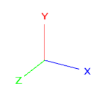
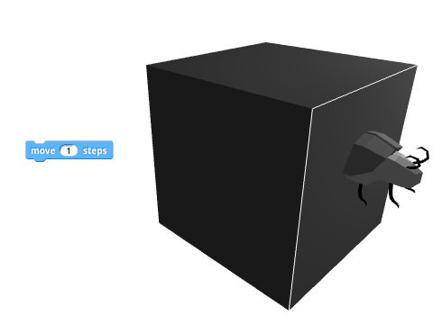
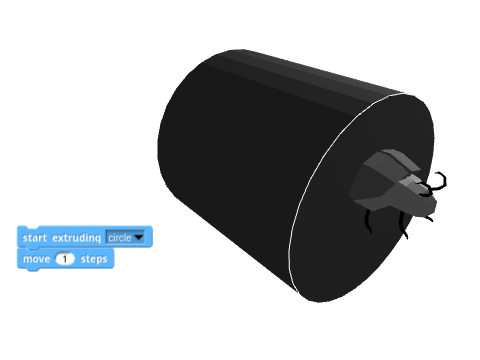
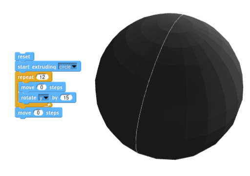

3D Beetle Extension
A Tiny Bit of History
The 3D Beetle extension is heavily inspired in Beetle Blocks Snap*!* mod, orignally designed by Eric Rosenbaum and Duks Koschitz and developed by Bernat Romagosa during the years 2014-2020.
Beetle Blocks was aimed at 3D fabrication, especially targetting 3D printing, which is why the 3D Beetle extension also allows exporting the generated geometry for 3D printing.
If You Were a Beetle Blocks User
Then you should know that the biggest change you'll need to adjust to is that there are no shape primitives in the 3D Beetle extension. All possible geometry is generated by extrusion. The rest of the extension should feel very natural for you, as all the other operations have been made to work pretty much identically, and the coordinate system has also been preserved.
Additionally, the 3D Beetle extension provides a few extra operations and features that you will easily adapt to.
You can refer to the blocks reference at the end of this article to learn what every single block does.
Overview and Abstractions
The Beetle
The Beetle is a character that can move around 3D space. Here's what it looks like in its default color:

This character is to 3D what the Lego turtle is to 2D. Turtles can move on a 2D plane, but beetles can additionally fly and dig underground, which makes them very apt for exploring the third dimension.
Movement and Rotation
You can move and rotate the Beetle by using its particular movement and rotation blocks. These work very much like the usual Motion blocks in Snap*!*, but the extra Z axis makes things slightly more complicated.

You can always look at the three axes of rotation -X (blue), Y (red) and Z (green)- to determine what your rotation or movement operation will have the beetle do.
Extrusion
While moving, the Beetle is also able to generate 3D geometry by means of what we call extrusion. Extruding is leaving a 3D trail along a path. Think of it as if the Beetle was carrying a pastry tube, or one of these play dough extruders, with interchangeable headers.

Extruding a Point
Extruding a single point will generate a line.

The  block includes an option in the dropdown menu for a point, centered right at the center of the beetle.
Extruding a Curve
Similarly, extruding a curve will generate a surface. A curve is any collection of points in a 2D plane that don't define a closed polygon.

The  block includes default options in the dropdown menu for two different curves: semicircle and line. If you want to extrude a different curve, you can always pass a different collection of 2D points to the block:


Extruding a Polygon
When extruding a polygon, the Beetle will generate a new prism at each movement step, with its base shaped as said polygon and with the end cap matching the current beetle rotation.

The  block includes default options in the dropdown menu for three different polygons: circle, triangle and square. If you want to extrude a different polygon, you can always pass a different collection of 2D points to the block, but you need to make sure that the first and last points are duplicated so that the Beetle knows you mean to extrude a closed shape:


Examples
First of all, you will need to open the 3D viewport in order to be able to see the Beetle and the geometries you generate. To do so, navigate to the 3D Beetle category and click on the button at the top of the blocks palette, labeled Open 3D Window.
Basic Solids
Since the only way to generate volumes with the Beetle is to extrude 2D shapes along a path, it can be interesting to start by taking a look at how to generate a bunch of basic solids.
An important block that you may want to have at hand is . This block will remove all geometry from the 3D view, and get the Beetle back to its original position.
Cube
A cube can be understood as an extrusion of a square. Let's begin by selecting the correct extrusion base from the dropdown menu in the following block:

You'll notice that the Beetle is now showing that shape around its body.

From this point on, any movement you ask it to perform is going to leave a square trail behind it. To get it to generate a cube, you just need to ask it to walk one single step:

Cylinder
Similarly, extruding a circle will produce a cylinder.

Tube
Here's where things can begin to get a little bit tricky. If you want the cylinder to have no caps -that is, if you want to generate a tube-, you can't rely on a simple prism extrusion. The base shape would need to be a circle with a smaller circular hole in the middle, which is not permitted.
One way to achieve a tube is to extrude a line around a circular path, thus generating the walls of the cylinder one by one as the beetle walks in a circle:

To change the height of the tube you will need to specify a custom line to extrude:

Tube with Thick Walls
The previous tube has walls of zero thickness. An easy way to achieve a thick wall is to extrude a custom rectangle along a circular path:

Notice how the tube presents a little glitch. The last extrusion step didn't quite close the walls as you may have expected. That is because the extrusion step is performed when the beetle moves, and the beetle moved before the last 15º rotation, when it happened to end up at the same spot and rotation it started from.
One simple solution is to perform an extra extrusion by asking the beetle to move zero steps after the loop:

Sphere
Extruding with zero-movement steps lets you generate revolution solids rather easily.
For example, revolving around a center point while extruding a circle will generate a sphere.

However, the internal geometry of this sphere is a bit wrong. The Beetle extension does its best to guess what you meant, but some 3D experts will frown upon this sphere. Some of the facets are facing inside-out, and there is also an internal circular face that is certainly not needed, since it'll never see the light of day.
Both the wireframe and ghost mode toggles can help you visualize what your geometry really looks like.

Most 3D software will take this sphere without flinching, but others will complain that the geometry is not correct and show it to you like it really is:
 
Sphere with Proper Geometry
The proper way to make a sphere is to revolve an open semicircle so that only the outer shell is generated, and with its facets always facing the correct way.

The geometry now looks perfectly fine in wireframe mode.

Additionally, all 3D software renders it properly with no complaints about reverse facets or internal faces.